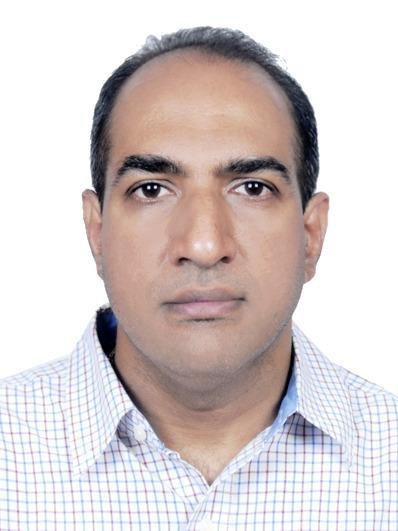

Prof. K Sreenivasa RaoProfessor |  |
Academic Details
Ph.D. (2005) : Thesis on “Acquisition and Incorporation of Prosodic Knowledge for Speech Systems in Indian Languages”, Department of Computer Science and Engineering, Indian Institute of Technology Madras, Chennai, India.
M.E (1993): Specialization in Communication Systems, Department of Electronics and Communication Engineering, PSG Tech., Coimbatore, India.
B.E (1990): Department of Electronics and Communication Engineering, Nagarjuna University, Guntur, India.
Areas of Research Interests
Signal processing
Speech processing
Audio, Music and Multimedia
Machine learning and Pattern Recognition
Big-data analytics
Appointments Held
Feb 2018 to till date: Professor, Department of Computer Science and Engineering, Indian Institute of Technology Kharagpur, India.
Dec 2015 to Jan 2018: Associate Professor, Department of Computer Science and Engineering, Indian Institute of Technology Kharagpur, India.
Feb 2013 to Nov 2015: Associate Professor, School of Information Technology, Indian Institute of Technology Kharagpur, India.
May 2007 to Jan 2013: Assistant Professor, School of Information Technology, Indian Institute of Technology Kharagpur, India.
Oct 2005 to Apr 2007: Assistant Professor, Department of Electronics and Communication Engineering, Indian Institute of Technology Guwahati, India.
Feb 2005 to Sept 2005: Project Officer, Department of Computer Science and Engineering, Indian Institute of Technology Madras, India.
Jan 2001 to Jan 2005: Ph.D. Scholar, Department of Computer Science and Engineering, Indian Institute of Technology Madras, India.
Oct 1998 to Dec 2000: Assistant Professor, Department of Electronics and Communication Engineering, Bapatla Engineering College, India.
July 1993 to Sept 1998: Lecturer, Department of Electronics and Communication Engineering, Bapatla Engineering College, India.
Institutional Responsibilities
July 2019 to June 2021: Faculty Adviser, M.Tech (CSE).
May 2016 to July 2017: Chairman: GATE-2017 and JAM-2017.
May 2015 to April 2016: Vice-Chairman: GATE-2016 and JAM-2016.
May 2014 to April 2015: Vice-Chairman: GATE-2015 and JAM-2015.
July 2015 to June 2016: Faculty Adviser, M.Tech (CSE) and M.Tech (IT).
July 2009 to June 2014: Faculty Adviser, M.Tech (IT).
Oct 2009 to Sept 2011: Associate Warden, LLR Hall.
 Detailed CV
Detailed CV